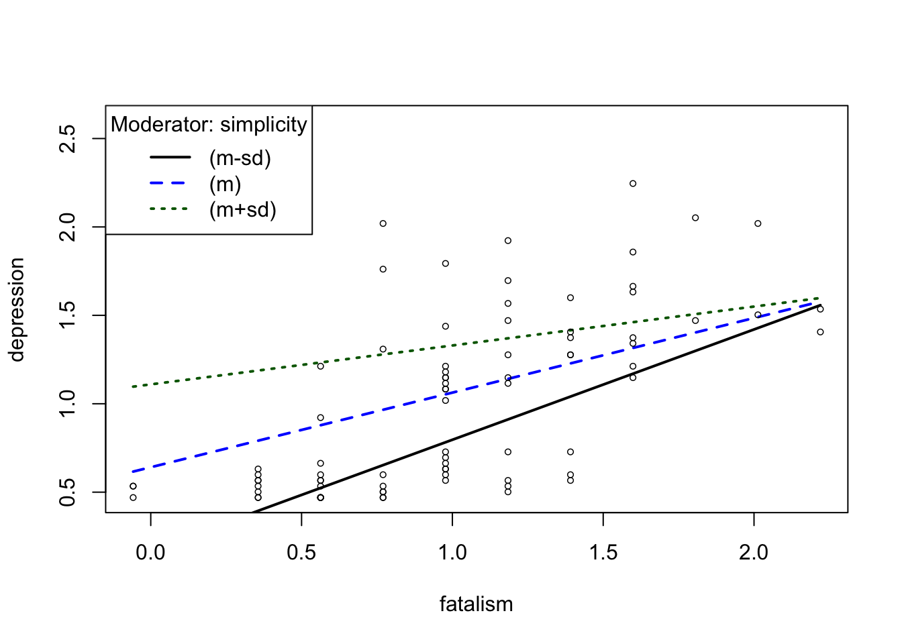
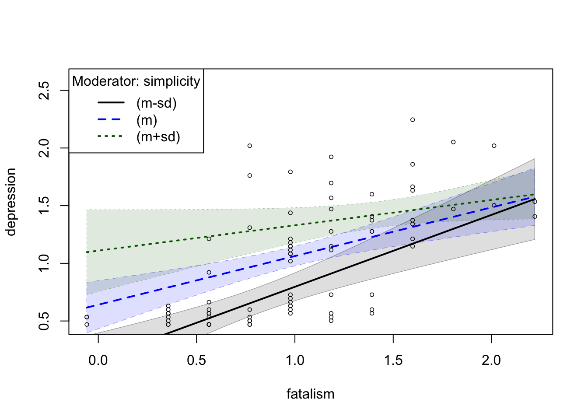

Lab 12: Moderation Analysis
Kris Ariyabuddhiphongs
Apr 28, 2022
# load all packages for this tutorial
#install.packages("rockchalk")
library(emmeans)
library(psych)
library(carData)
library(rockchalk)Interaction between Continuous and Continuous Variables
เราจะใช้ชุดข้อมูล Ginzberg จาก carData
ซึ่งเป็นข้อมูลผู้ป่วยโรคซึมเศร้า
X = fatalism คะแนนมาตร fatalism
ความเชื่อว่าทุกสิ่งถูกกำหนดไว้แล้ว
W = simplicity การมองโลกมีแค่ขาว-ดำ
Y = depression มาตรวัดภาวะซึมเศร้าของ Beck
ตัวแปรที่มีชื่อ adj นำหน้าเป็นตัวแปรเดียวกันแต่มีการปรับแก้ทางสถิติ เราจะไม่ได้ใช้ตัวแปรเหล่านั้น
data(Ginzberg)
depression <- Ginzberg
head(depression)## simplicity fatalism depression adjsimp adjfatal adjdep
## 1 0.92983 0.35589 0.59870 0.75934 0.10673 0.41865
## 2 0.91097 1.18439 0.72787 0.72717 0.99915 0.51688
## 3 0.53366 -0.05837 0.53411 0.62176 0.03811 0.70699
## 4 0.74118 0.35589 0.56641 0.83522 0.42218 0.65639
## 5 0.53366 0.77014 0.50182 0.47697 0.81423 0.53518
## 6 0.62799 1.39152 0.56641 0.40664 1.23261 0.34042boxplot(depression)
สังเกตว่าตัวแปรทั้งหมดอยู่ใน scale ใกล้เคียงกัน แสดงว่าผู้วิจัยน่าจะมีการแปลงคะแนนให้อยู่ในสเกลประมาณ 1 ตรงกลาง เพื่อให้อ่านค่าง่าย อย่างไรก็ดีการ scale นี้ไม่ส่งผลกระทบต่อการทดสอบความสัมพันธ์
Base R
lm()
หลักการของตัวแปรกำกับคือ ปฏิสัมพันธ์ (interaction) ระหว่างตัวแปรทำนาย เราจึงสามารถเขียนสมการถดถดอยเชิงเส้นตรงได้ตามนี้
depression.lm <- lm(depression ~ fatalism + simplicity + fatalism:simplicity, data = depression)
summary(depression.lm, confint = TRUE)##
## Call:
## lm(formula = depression ~ fatalism + simplicity + fatalism:simplicity,
## data = depression)
##
## Residuals:
## Min 1Q Median 3Q Max
## -0.55988 -0.20390 -0.03806 0.15617 1.01101
##
## Coefficients:
## Estimate Std. Error t value Pr(>|t|)
## (Intercept) -0.2962 0.1918 -1.544 0.12665
## fatalism 0.8259 0.1685 4.902 5.05e-06 ***
## simplicity 0.9372 0.2121 4.418 3.17e-05 ***
## fatalism:simplicity -0.4039 0.1370 -2.949 0.00421 **
## ---
## Signif. codes: 0 '***' 0.001 '**' 0.01 '*' 0.05 '.' 0.1 ' ' 1
##
## Residual standard error: 0.3353 on 78 degrees of freedom
## Multiple R-squared: 0.567, Adjusted R-squared: 0.5504
## F-statistic: 34.05 on 3 and 78 DF, p-value: 3.587e-14plot(depression.lm) # assumption checks


แม้การทดสอบ assumptions จะไม่ได้ดูสมบูรณ์แบบแต่ ไม่ได้มีการละเมิดอย่างร้ายแรง ด้วยความที่ regression นั้นแกร่ง (robust) ต่อการละเมิดอยู่แล้ว เราจึงดำเนินการวิเคราะห์ต่อไปโดยไม่ได้ปรับแก้อะไร
โดยรวมแล้วโมเดลนี้ทำนายภาวะซึมเศร้าได้ค่อนข้างดี สังเกตจากค่า \(R^2\) ที่สูงถึง .57
Probing Interaction
เราพบว่าอิทธิพลปฏิสัมพันธ์นั้นมีนัยสำคัญทางสถิติ
เนื่องจาก W เป็นตัวแปรต่อเนื่อง เราจะกำหนดให้โปรแกรมคำนวณค่า simple slope ที่ 3 ตำแหน่งของค่า W
simp_minus1 <- mean(depression$simplicity) - sd(depression$simplicity)
simp_mean <- mean(depression$simplicity)
simp_plus1 <- mean(depression$simplicity) + sd(depression$simplicity)
locations <- list(simplicity = c(simp_minus1, simp_mean, simp_plus1))
locations## $simplicity
## [1] 0.5000005 1.0000005 1.5000005ใช้คำสั่ง emtrends() เพื่อคำนวณค่า simple slopes ของตัวแปรทำนาย
fatalism ที่ตำแหน่งต่าง ๆ ของตัวแปรกำกับ (W)
simplicity
emtrends(depression.lm, ~ simplicity , var = "fatalism", at = locations)## simplicity fatalism.trend SE df lower.CL upper.CL
## 0.5 0.624 0.1188 78 0.3874 0.860
## 1.0 0.422 0.0961 78 0.2307 0.613
## 1.5 0.220 0.1172 78 -0.0132 0.453
##
## Confidence level used: 0.95สังเกตว่าค่า slope ระหว่าง fatalism กับ depression ลดลงเมื่อ simplicity สูงขึ้น
Plotting interaction
ใช้คำสั่ง emmip() ในการสร้างกราฟ โดยจะต้องระบุว่าจะให้ plot
ค่าตัวแปร x และ y ที่จุดใดบ้าง
เราจะสร้าง list กำหนดค่าแกน x ตั้งชื่อตามตัวแปร fatalism
โดยกำหนดให้มีค่าตั้งแต่ min() ถึง max() ของ
fatalism ขยับขึ้นทีละ 0.3 หน่วย
กำหนดค่าตัวแปรกำกับ 3 ตำแหน่ง ที่ -1 SD, mean, +1SD ของตัวแปร
simplicity
ในคำสั่ง emmip() กำหนดว่าตัวแปรใดเป็นตัวแปรทำนายหรือตัวแปรกำกับ
ในรูปแบบ W ~ X
คำสั่ง at = ใช้บอกว่าจะให้สร้างกราฟที่ค่า x y เท่าใด และ
CIs = กำหนดว่าจะสร้าง error bars หรือไม่
xy_value <- list(fatalism = c(seq(min(depression$fatalism), max(depression$fatalism),
by = 0.3)),
simplicity = c(simp_minus1, simp_mean, simp_plus1))
emmip(depression.lm, simplicity ~ fatalism, at = xy_value, CIs = TRUE)
rockchalk Package
แพ็คเกจ rockchalk มีคำสั่งที่ช่วยให้เราสร้าง simple slope plot ได้อย่างสะดวก
plotSlopes(model, modx = moderator, plotx = predictorX, modxVals = Focal values of plot)
คำสั่ง testSlopes(plotSlopesObject) จะคำนวณ t-test ของ
simple slopes แต่ละเส้นตามที่กำหนดไว้ใน plotSlopes()
# Plot simple slopes
ps <- plotSlopes(depression.lm, modx = "simplicity", plotx = "fatalism", modxVals = "std.dev")
# test simpleslopes and save to an object
tps <- testSlopes(ps)## Values of simplicity OUTSIDE this interval:
## lo hi
## 1.476340 4.346491
## cause the slope of (b1 + b2*simplicity)fatalism to be statistically significant# Call t-tests table
tps$hypotests## "simplicity" slope Std. Error t value Pr(>|t|)
## (m-sd) 0.5 0.6239287 0.11881351 5.251328 1.271672e-06
## (m) 1.0 0.4219887 0.09607602 4.392237 3.490096e-05
## (m+sd) 1.5 0.2200487 0.11715427 1.878282 6.407955e-02# plotCurves can include confidence interval bands
plotCurves(depression.lm, modx = "simplicity", plotx = "fatalism", modxVals = "std.dev",
interval = "confidence")
PROCESS v4.1 for R
Macro โดย Andrew Hayes https://www.processmacro.org/download.html
วิธีใช้
- Download ไฟล์ และ unzip
- เปิดไฟล์ process.R
- Run All แล้วรอสักพัก
- จะมี Functions ที่ชื่อว่า
processขึ้นมาอยู่ใน environment - ต้อง Run script นี้ใหม่ทุกครั้งหลังจากปิด R
หรือ save process.R ไว้ใน working directory แล้วใช้คำสั่ง
source()
source("process.R")##
## ********************** PROCESS for R Version 4.1 **********************
##
## Written by Andrew F. Hayes, Ph.D. www.afhayes.com
## Documentation available in Hayes (2022). www.guilford.com/p/hayes3
##
## ***********************************************************************
##
## PROCESS is now ready for use.
## Copyright 2022 by Andrew F. Hayes ALL RIGHTS RESERVED
## Workshop schedule at http://haskayne.ucalgary.ca/CCRAM
## เราจะกำหนด w = ชื่อตัวแปรกำกับ และใช้ model = 1
ซึ่งเป็นโมเดลตัวแปรกำกับอย่างง่าย
process(data = depression, y = "depression", x = "fatalism", w = "simplicity", model = 1)##
## ********************** PROCESS for R Version 4.1 **********************
##
## Written by Andrew F. Hayes, Ph.D. www.afhayes.com
## Documentation available in Hayes (2022). www.guilford.com/p/hayes3
##
## ***********************************************************************
##
## Model : 1
## Y : depression
## X : fatalism
## W : simplicity
##
## Sample size: 82
##
##
## ***********************************************************************
## Outcome Variable: depression
##
## Model Summary:
## R R-sq MSE F df1 df2 p
## 0.7530 0.5670 0.1124 34.0510 3.0000 78.0000 0.0000
##
## Model:
## coeff se t p LLCI ULCI
## constant -0.2962 0.1918 -1.5439 0.1267 -0.6781 0.0857
## fatalism 0.8259 0.1685 4.9021 0.0000 0.4905 1.1613
## simplicity 0.9372 0.2121 4.4182 0.0000 0.5149 1.3594
## Int_1 -0.4039 0.1370 -2.9486 0.0042 -0.6766 -0.1312
##
## Product terms key:
## Int_1 : fatalism x simplicity
##
## Test(s) of highest order unconditional interaction(s):
## R2-chng F df1 df2 p
## X*W 0.0483 8.6945 1.0000 78.0000 0.0042
## ----------
## Focal predictor: fatalism (X)
## Moderator: simplicity (W)
##
## Conditional effects of the focal predictor at values of the moderator(s):
## simplicity effect se t p LLCI ULCI
## 0.5337 0.6103 0.1162 5.2542 0.0000 0.3791 0.8416
## 0.8827 0.4694 0.0976 4.8069 0.0000 0.2750 0.6638
## 1.4203 0.2522 0.1113 2.2668 0.0262 0.0307 0.4737
##
## ******************** ANALYSIS NOTES AND ERRORS ************************
##
## Level of confidence for all confidence intervals in output: 95
##
## W values in conditional tables are the 16th, 50th, and 84th percentiles.สังเกตตำแหน่งในการคำนวณ simple slope (เรียกว่า conditional effect ใน output) จะอยู่ที่ 16 th, 50th, และ 84th percentile ซึ่งเป็นตำแหน่งที่ใกล้เคียงกับ -1SD, mean, +1SD แต่ก็ยังไม่ใช่ค่าเดียวกัน ผลจึงอาจแตกต่างจากวิธีด้านบน
Mean Centering
การแปลงค่าศูนย์กลางจะช่วยลด multicollinearity
ระหว่างตัวแปรทำนายกับพจน์ปฏิสัมพันธ์ (interaction term) ซึ่งจะทำให้ค่าจุดตัดแกน Y
และสัมประสิทธิ์ของตัวแปรทำนาย X เปลี่ยนแปลงไป แต่ไม่ส่งผลต่อค่าสัมประสิทธิ์ของพจน์ปฏิสัมพันธ์
(coefficient of an interaction term; X:W)
การตัดสินใจแปลงค่าศูนย์กลางจึงขึ้นอยู่กับว่าคำถามในการวิเคราะห์สนใจตอบคำถามใดเป็นหลัก หากเป็นปฏิสัมพันธ์ก็อาจไม่จำเป็นต้องทำ mean centering ก็ได้
# Mean centering
depression$cen.fatalism <- depression$fatalism - mean(depression$fatalism)
depression$cen.simplicity <- depression$simplicity - mean(depression$simplicity)
# Regression with centered variables
dep.cen.lm <- lm(depression ~ cen.fatalism + cen.simplicity + cen.fatalism:cen.simplicity, data = depression)สังเกตว่าค่าสัมประสิทธิ์ของ cen.fatalism และ
cen.simplicity จะแตกต่างไปจากโมเดลที่ไม่ได้ปรับค่าศูนย์กลาง แต่
cen.fatialism:cen.simplicity นั้นไม่แตกต่างจาก
fatalism:simplicity ในโมเดลก่อนหน้านี้
summary(dep.cen.lm)##
## Call:
## lm(formula = depression ~ cen.fatalism + cen.simplicity + cen.fatalism:cen.simplicity,
## data = depression)
##
## Residuals:
## Min 1Q Median 3Q Max
## -0.55988 -0.20390 -0.03806 0.15617 1.01101
##
## Coefficients:
## Estimate Std. Error t value Pr(>|t|)
## (Intercept) 1.06296 0.04274 24.870 < 2e-16 ***
## cen.fatalism 0.42199 0.09608 4.392 3.49e-05 ***
## cen.simplicity 0.53327 0.10930 4.879 5.53e-06 ***
## cen.fatalism:cen.simplicity -0.40388 0.13697 -2.949 0.00421 **
## ---
## Signif. codes: 0 '***' 0.001 '**' 0.01 '*' 0.05 '.' 0.1 ' ' 1
##
## Residual standard error: 0.3353 on 78 degrees of freedom
## Multiple R-squared: 0.567, Adjusted R-squared: 0.5504
## F-statistic: 34.05 on 3 and 78 DF, p-value: 3.587e-14# rockchalk::plotSlopes
cen.ps <- plotSlopes(dep.cen.lm,
plotx = "cen.fatalism",
modx = "cen.simplicity",
modxVals = "std.dev")
cen.tps <- testSlopes(cen.ps)## Values of cen.simplicity OUTSIDE this interval:
## lo hi
## 0.4763399 3.3464910
## cause the slope of (b1 + b2*cen.simplicity)cen.fatalism to be statistically significant# Simple slopes analysis
cen.tps$hypotests## "cen.simplicity" slope Std. Error t value Pr(>|t|)
## (m-sd) -0.5 0.6239285 0.11881347 5.251328 1.271671e-06
## (m) 0.0 0.4219885 0.09607602 4.392235 3.490122e-05
## (m+sd) 0.5 0.2200485 0.11715431 1.878279 6.407987e-02สังเกตว่า การปรับค่าศูนย์กลางไม่ส่งผลต่อการวิเคราะห์ simple slopes
Copyright © 2022 Kris Ariyabuddhiphongs